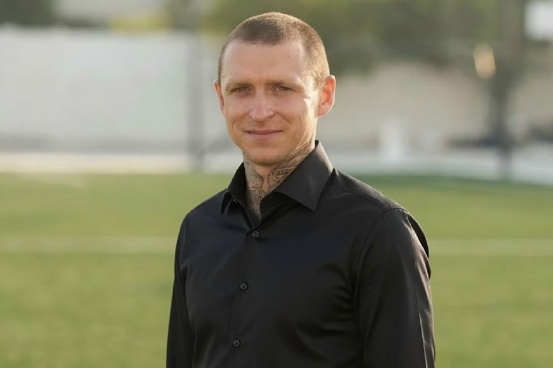
01
Спорт · событие дня
Матч состоится 25 октября в 14:30. Перед игрой болельщики смогут взять автограф у Мамаева
С этого сезона Павел Мамаев также является советником президента ульяновского футбольного клуба Дмитрия Рябова.

С этого сезона Павел Мамаев также является советником президента ульяновского футбольного клуба Дмитрия Рябова.
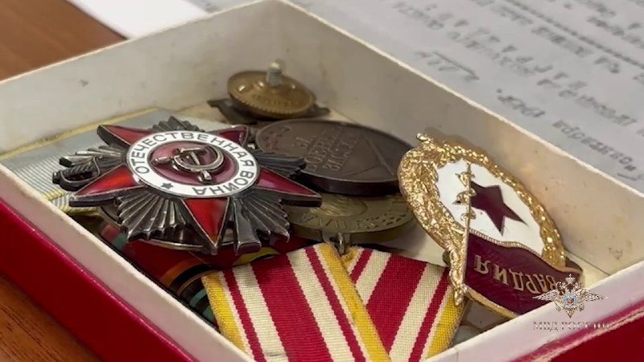
В мэрии призывают сбрасывать такие звонки и не называть данные документов.…
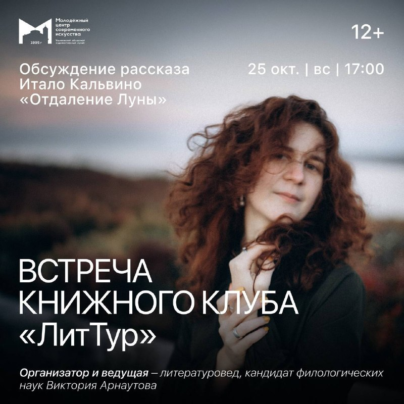
Первомайский район, пешеходная дорога вдоль гостинице…
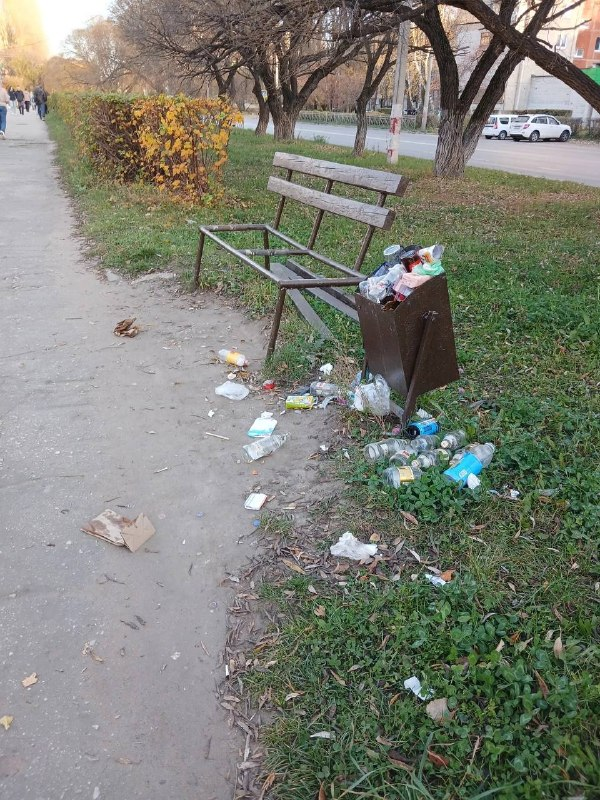
Данная мера применяется ежегодно с установлением отрицательных температур.

«Это как в пьесах Чехова: если в первом акте висит ружье, то в третьем оно выстрелит», — добавил Вучич.…
В регионе продолжается реализация национального проекта «Инфраструктура для жизни», инициированного Президентом РФ Владимиром Путиным.…
По результатам комбинированного метода опроса россиян показатель одобрения деятельности Президента с 5 по 11…
В Ульяновске высококлассных специалистов для ВС России готовит 623-й Межвидовый региональный учебный центр.

В России собрано больше 131 млн тонн зерна и свыше 27 млн тонн масличных культур. Озимыми засеяно три четверти запланированных площадей.…
Но только если мемориал “высасывает” деньги из бюджета Ульяновской области и федерального бюджета, то собор, видимо, собираются восстановить на частные пожертвования.……
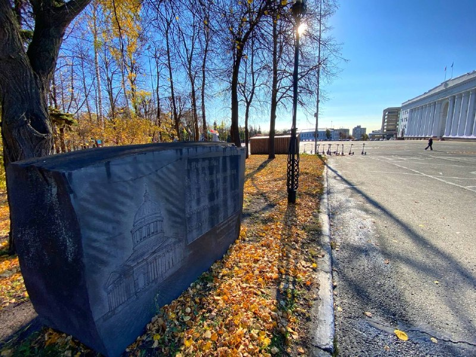
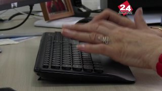
Во вторник пройдёт очередной бизнес-завтрак «ВМЕСТЕ» про внутренние ограничения предпринимателей.…
📉 🚀 Экономьте по-крупному: Таких скидок больше не будет! 👇 Хотите узнать цену?…

Roadster представили ещё в 2017 году и обещали выпустить в 2020-м, но с тех пор сроки неоднократно переносили.


Глава Ульяновска Александр Болдакин, заслушав доклад о содержании территорий и проведении комплекса благоустроительных мероприятий, поручил довести до предпринимателей требования по обеспечению и поддержанию порядка в зоне своей ответственности.…

В октябре 1941 года, когда стране нужно было в кратчайшие сроки разворачивать эвакуированные авиационные производства, в Казани появилась специальная проектная бригада №6.…
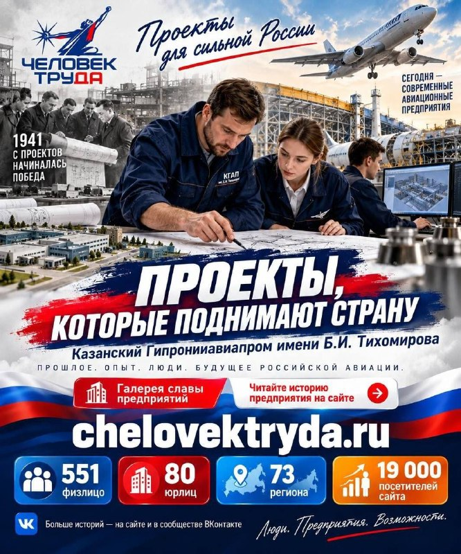
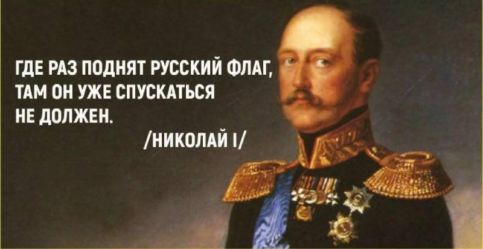

Ребенок в тяжелом состоянии 🔴 если не грузит смотри в…
Госпитализированы 64-летняя женщина, двое других пешеходов и пассажир легкового автомобиля.…

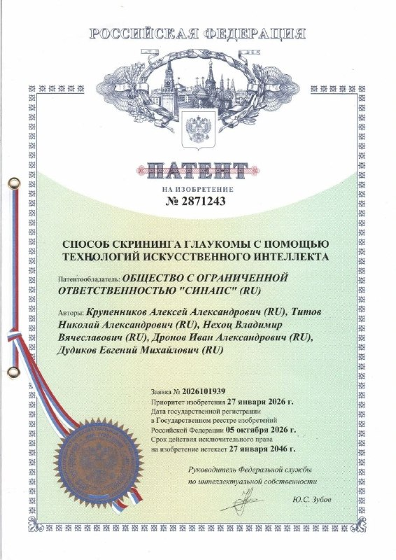
В регион уже поступило свыше 219 тысяч доз вакцины.…
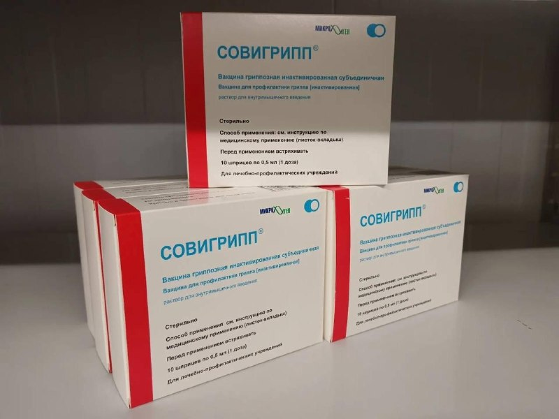
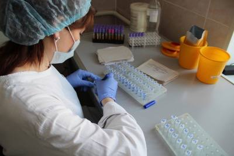
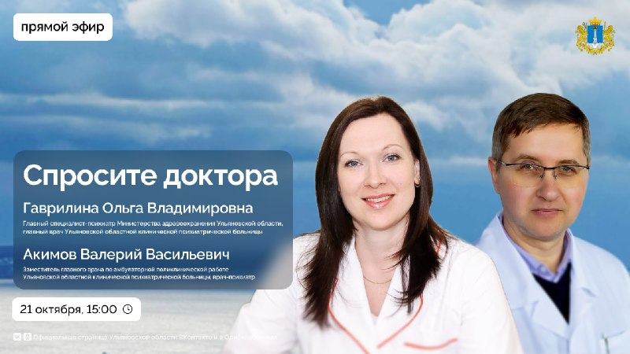
В ближайшее время мобильные прививочные пункты развернут в крупных торговых центрах Ульяновска.…
За прошедшую неделю на региональный аптечный склад поступило больше 27 тысяч упаковок льготных лекарств, сообщает минздрав Ульяновской области.…
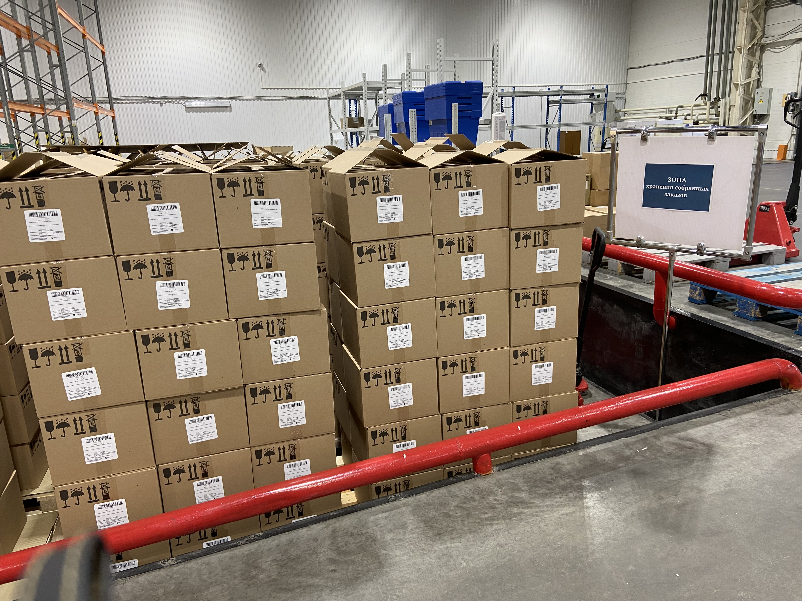
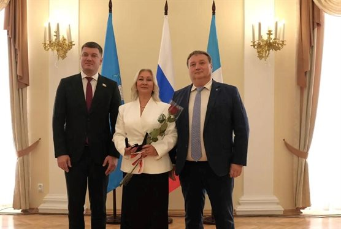
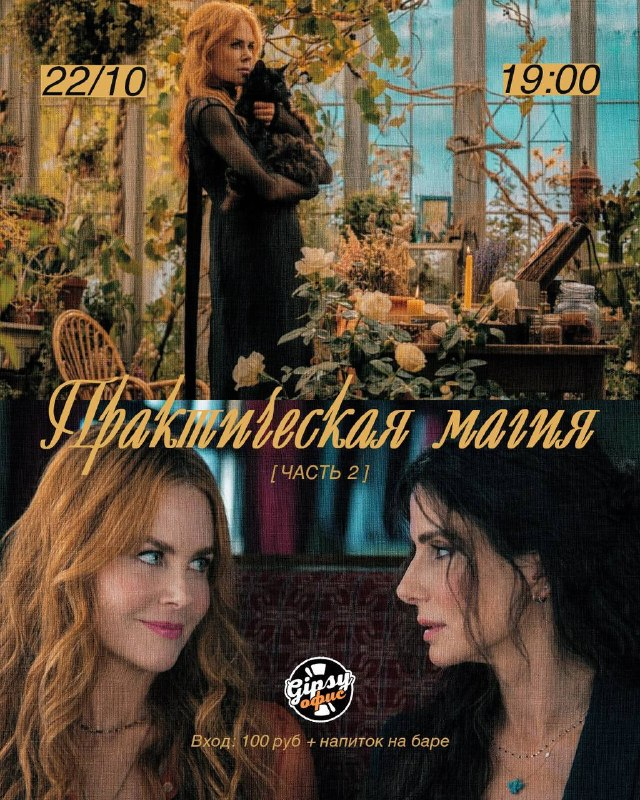
«Практическая магия» — это тёплый, немного мистический и невероятно романтичный фильм о двух сёстрах Оуэнс, которые унаследовали не только дар колдовства, но и семейное проклятие: любой мужчина, которого они полюбят, обречён на гибель.…
К ним стучатся два милых молодых человека, которые представляются гостями соседей. У обоих на руках белые перчатки.…
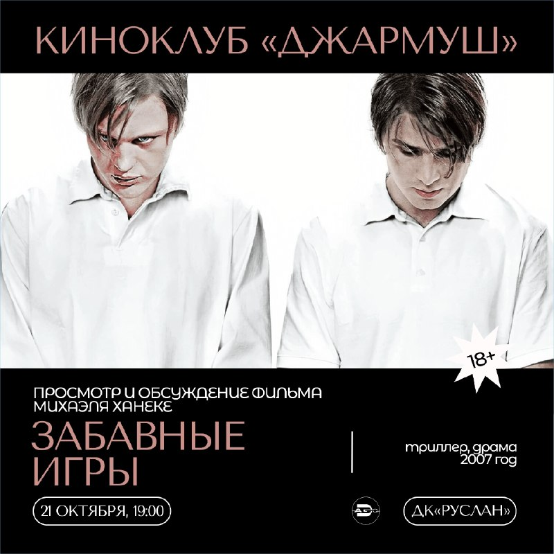
В Воронеже за победу боролись команды из разных районов области.…

Среди обсужденных первоочередных шагов - обследование территории, на которой в Симбирске находились Троицкий, а также Николаевский кафедральные соборы.…
• 23 октября, 18:00 • МЦСИ, ул. Ленина 83 🏷 Вход — свободные взносы!…


ЦБ видит в такой схеме риски отмывания денег, поэтому банки усиливают контроль за подобными операциями.
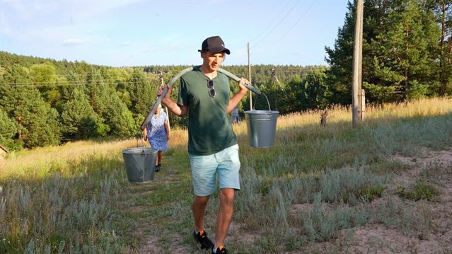
Дату сдвинули, поскольку привычный день выплат оказался выходным.…
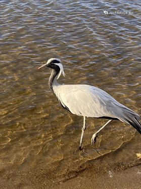
Он успел заполнить четыре ёмкости и взялся за пятую, когда его остановили полицейские.…
🚨 В Ульяновской области руководителям образовательных организаций ещё раз напомнили алгоритм действий при ракетной и беспилотной опасности.…
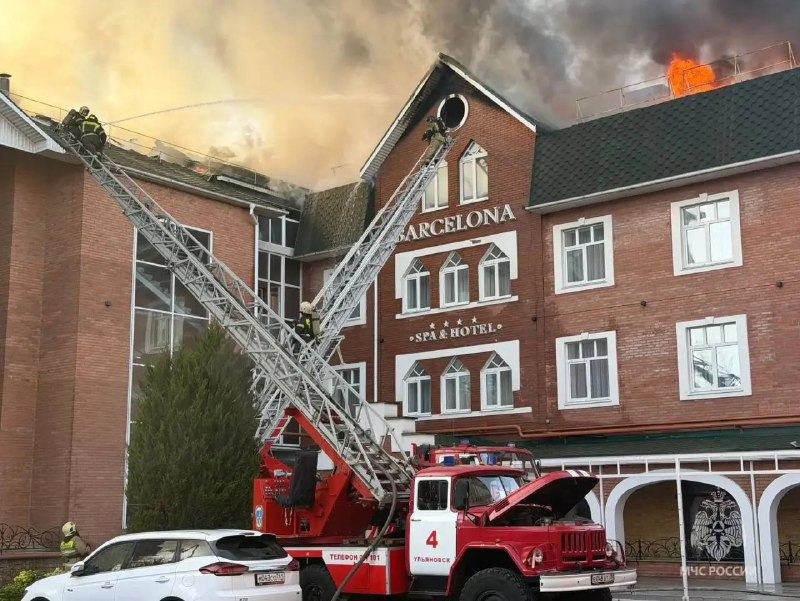
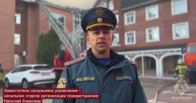
Попов , руководитель Исполкома Народного фронта М.М.…
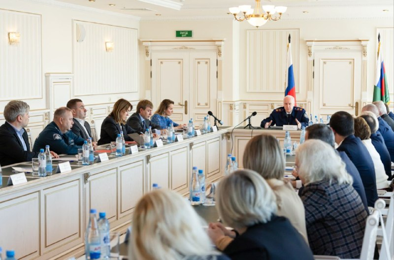
В Железнодорожном районе Ульяновска сотрудники уголовного розыска задержали 44-летнего водителя бензовоза, подозреваемого в попытке хищения топлива из цистерны, — об инциденте сообщили в региональном управлении МВД.…

Заместитель Председателя Правительства Дмитрий Патрушев провёл совещание по ситуации на зерновом рынке.…
Ульяновская область вошла в пятерку лучших по урожайности зерновых и зернобобовых в ПФО.…
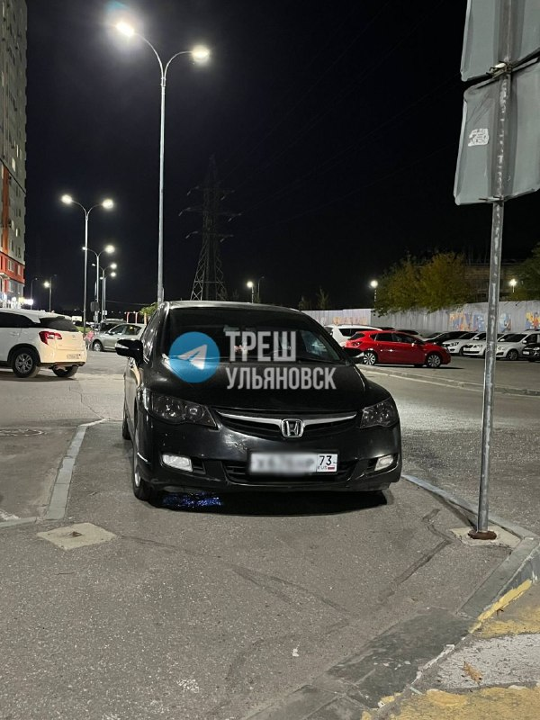
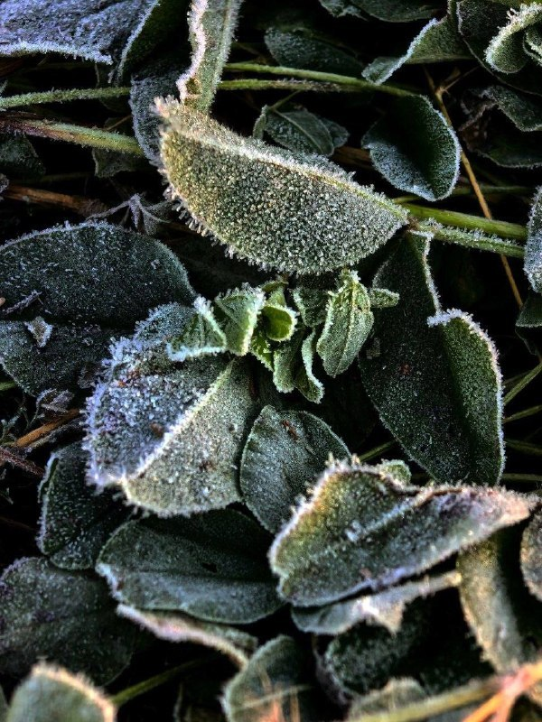
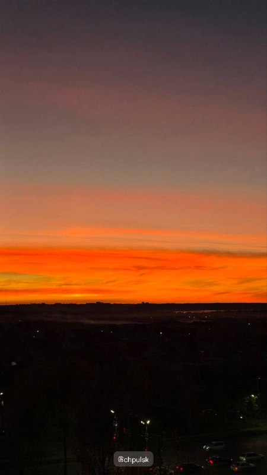
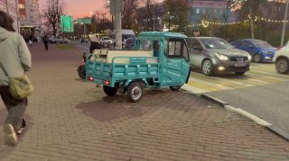
Мероприятия проекта прошли в Нижегородской области.…
Скульптуру создал Игорь Фролов. Как вам?…
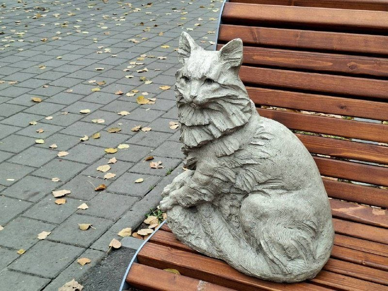
Такое решение рассматривают на фоне роста численности медведей: всё чаще они появляются рядом с населёнными пунктами.…
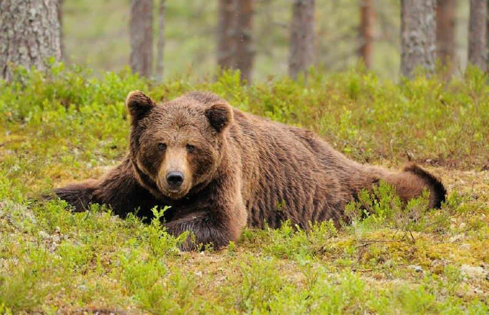
Работы выполняются в рамках образовавшейся экономии средств по региональной программе «Мой двор», которую инициировал Губернатор Ульяновской области Алексей Русских.…
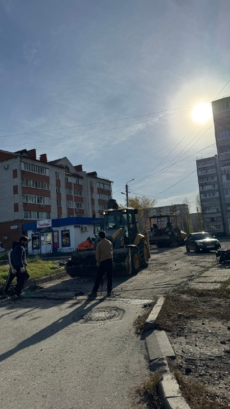
У дома ведутся раскопки, а система отопления повреждена. На комиссию, которую ожидали сегодня, никто не пришёл.…
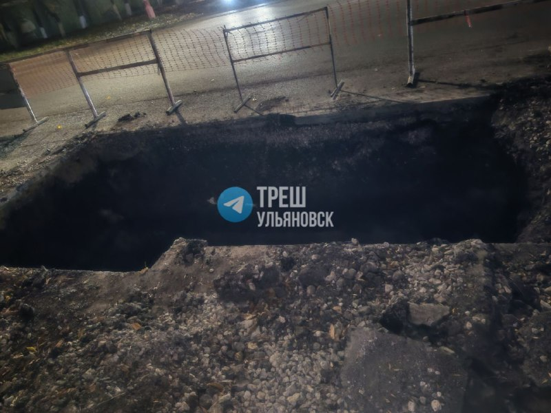
Если эксперимент окажется успешным, то в будущем такая цветомузыка появится и на других…

Подробности и ответы на часто задаваемые вопросы — в карточках выше ⬆️…
Работа должна соответствовать осваиваемой или полученной профессии.…
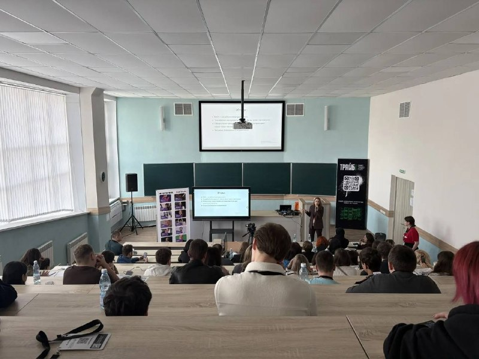
17 октябрьдә Кузоватово технология техникумының Иске Кулаткыдагы бүлекчәсендә Ачык ишекләр көне үткәрелде.…
Раньше статус гражданина на стажировке был размыт: то ли он уже работник, то ли еще ученик.
С этого сезона Павел Мамаев также является советником президента ульяновского футбольного клуба Дмитрия Рябова.
Это динамичная игра подходит людям с оюбым уровнем физической подготовки.…

Азбука гепатитов в рубрике «Полезно знать». — Сильные достижения регионального силового спорта.…

Обсуждались работа единой экосистемы в сфере спорта, участие российских спортсменов в международных соревнованиях и финансирование отрасли.…
По поручению главы города Александра Болдакина культурные и спортивные учреждения подготовили насыщенную программу на этой неделе.

Отменяются ранее назначенные пригородные поезда: - № 6713 Ульяновск-Центральный (отправление в 8:41) – Инза (прибытие в 12:14); - № 6714 Инза (отправление в 14:12) – Ульяновск-Центральный (прибытие в 17:31).…
Матч пройдёт 25 октября в 14:30 на стадионе «Труд».…
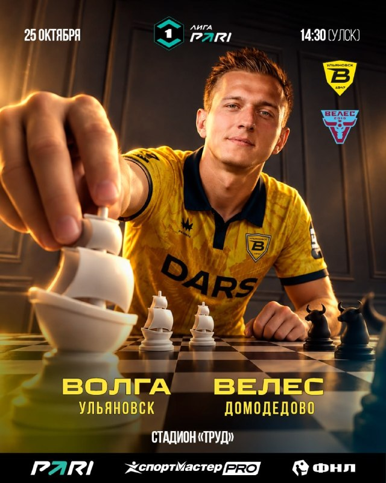
Соответствующий закон подписал Владимир Путин.…
Соперник из Домодедово перед встречей делит 3–5-е места в турнирной таблице.
Паспорта, в которые дети уже внесены, останутся действительными до окончания срока.…
| Тема | Завтра | Ожидание | Уверенность |
|---|---|---|---|
| БПЛА и воздушные угрозы | ↓ спад | ~0.0 упоминаний | средняя |
| Школы и вузы | ↓ спад | ~19.3 упоминаний | средняя |
| Погода | ↑ рост | ~20.1 упоминаний | средняя |
| ЖКХ, газ, тепло | ↑ рост | ~6.1 упоминаний | средняя |
| Урожай и АПК | ↓ спад | ~2.9 упоминаний | средняя |
| Авиапром / УКБП / Ил-114 | → плато | ~7.4 упоминаний | низкая |